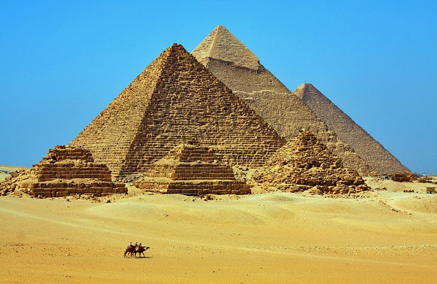

Cairo
Cairo is the capital and largest city of Egypt. The Cairo metropolitan area, with a population of 21.3 million, is the largest metropolitan area in the Middle East, the largest metropolitan area in the Arab world, the second largest in Africa, and the world’s sixth largest. Cairo is associated with ancient Egypt, as the Giza pyramid complex and the ancient city of Memphis are located in its geographical area. Located near the Nile Delta, Cairo was founded in 969 AD during the Fatimid dynasty, but the land composing the present-day city was the site of Ancient National Capitals whose remnants remain visible in parts of Old Cairo. Cairo has long been a centre of the region's political and cultural life, and is titled "the city of a thousand minarets" for its preponderance of Islamic architecture. Cairo's historic center was awarded World Heritage Site-status in 1979. Cairo is considered a World City with a "Beta +" classification according to GaWC. Today, the Egyptian capital has the oldest and largest film and music industries in the Middle East and the Arab world, as well as the world's second-oldest institution of higher learning, Al-Azhar University. Many international media, businesses, and organizations have regional headquarters in the city; the Arab League has had its headquarters in Cairo for most of its existence. With a population of over 9 million spread over 453 km2 (175 sq mi), Cairo is by far the largest city in Egypt. An additional 9.5 million inhabitants live in close proximity to the city. Cairo, like many other megacities, suffers from high levels of pollution and traffic. The Cairo Metro is one of only two metro systems in Africa (the other being in Algiers, Algeria), and ranks amongst the fifteen busiest in the world, with over 1 billion annual passenger rides. The economy of Cairo was ranked first in the Middle East in 2005, and 43rd globally on Foreign Policy's 2010 Global Cities Index.
Great Pyramid of Giza
The Pyramids of Giza are Cairo's number one half-day trip and a must-do attraction on everyone's itinerary. Right on the edge of the city, on the Giza Plateau, these fourth dynasty funerary temples have been wowing travelers for centuries and continue to be one of the country's major highlights. Despite the heat, the dust, and the tourist hustle, you can't miss a trip here. The Pyramid of Cheops (also called the Great Pyramid or Pyramid of Khufu) is the largest pyramid of the Giza group, and its interior of narrow passages can be explored, although there isn't much to see, except a plain tomb chamber with an empty sarcophagus. Directly behind the Great Pyramid is the Solar Boat Museum, which displays one of the ceremonial solar barques unearthed in the area that has been painstakingly restored to its original glory. Farther south on the plateau is the Pyramid of Chephren (also known as the Pyramid of Khefre), with an internal tunnel area, which can be entered, and the smaller Pyramid of Mycerinus (Pyramid of Menkaure). Guarding these mortuary temples is the lion-bodied and pharaoh-faced Sphinx; one of the ancient world's iconic monuments.
The Museum of Egyptian Antiquities

The absolutely staggering collection of antiquities displayed in Cairo's Egyptian Museum makes it one of the world's great museums. You would need a lifetime to properly see everything on show. The museum was founded in 1857 by French Egyptologist August Mariette and moved to its current home - in the distinctive powder-pink mansion in Downtown Cairo - in 1897. Yes, the collection is poorly labeled and not well set out due to limits of space (and only a fraction of its total holdings are actually on display). It also currently suffers with some empty cases due to artifacts having already been transferred to the as yet unopened new Grand Egyptian Museum (GEM), but you still can't help being impressed by the sheer majesty of the exhibits.
Al-Azhar Mosque
Al-Azhar Mosque is the finest building of Cairo's Fatimid era and one of the city's earliest surviving mosques, completed in AD 972. It's also one of the world's oldest universities - Caliph El-Aziz bestowed it with the status of university in AD 988 (the other university vying for "oldest" status is in Fes) and today, Al-Azhar University is still the leading theological center of the Islamic world. The main entrance is the Gate of the Barbers on the northwest side of the building, adjoining the neo-Arab facade built by Abbas II. Leave your shoes at the entrance and walk into the central courtyard. To your right is the El-Taibarsiya Medrese, which has a mihrab (prayer niche) dating from 1309. From the central courtyard, you get the best views of the mosque's five minarets, which cap the building. Across the courtyard is the main prayer hall, spanning a vast 3,000 square meters. The front half is part of the original building, while the rear half was added by Abd el-Rahman. Al-Azhar Mosque is right in the heart of the Islamic Cairo district and easy to reach by taxi. Al-Azhar Street runs east from Midan Ataba in the downtown area right to the square where the mosque sits.